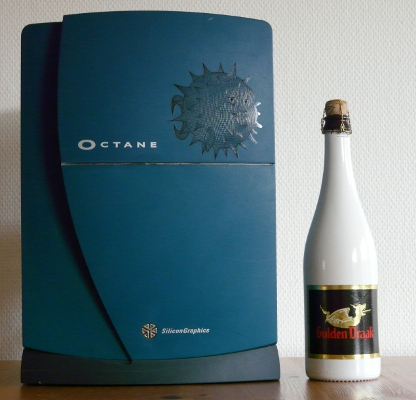

|
OpenBSD/sgi runs on most 64 bit MIPS-based SGI servers and workstations.
OpenBSD/sgi is a fully featured 64 bit port and will thus only run on systems
based on 64 bit processors, i.e. R4000 and up.
The OpenBSD/sgi port was discontinued after the 6.5 release.
A mailing list dedicated to the OpenBSD/sgi port is available at
sgi@openbsd.org.
To join the OpenBSD/sgi mailing list, send a message body of "subscribe
sgi" to majordomo@openbsd.org.
Please be sure to check our mailing list policy before
subscribing.
|

|
History
The OpenBSD/sgi port has its roots in the OpenBSD/arc
port created early in the OpenBSD history. ARC support was rather soon
discontinued due to the lack of interest and availability of decent hardware.
Eventually SGI hardware became more affordable and obtainable, and interest
for an SGI port in the tree increased.
The final piece, a working 64 bit toolchain, eventually became available and
allowed the 64 bit SGI OpenBSD port to appear in 2004.
Hardware support was initially limited to the O2 workstations. Efforts
to port to more systems did not really start until 2008, where the first
Octane support parts were introduced. This work was completed in 2009
with support for Origin family systems as well, allowing OpenBSD to be
the first free operating system to run on the Fuel workstations, and even
later, also on Origin 350 servers.
The earlier generation of R4000 Indigo, Indy and Indigo2 was not forgotten
either and support for it appeared in 2012. This paved the way for
R8000 and R10000 POWER Indigo2 support as well.
Current status
OpenBSD/sgi runs in 64 bit mode and boots multi-user on supported
systems. Snapshots are made periodically as the port develops and expands.
All graphics options but the IP27 Kona frame buffer should be supported;
on such setups the kernel will be limited to serial console operation only.
An X server, currently unaccelerated, is also available for IP32 (O2) systems.
Supported hardware
For a complete system component and device driver listing for this architecture, see intro(4/sgi).
The following families are supported:
- IP20 (R4000 Indigo) family:
- Indigo (R4000 and R4400 models)
- IP22 (Indy, Indigo2) family:
All R4000, R4400, R4600 and R5000 processor options are supported.
- IP26 (POWER Indigo2) family:
- IP27 (Origin) family:
Origin 2000 and Onyx 2 are not supported yet. Single-node multiprocessor
operation is supported on Origin 200.
- IP28 (POWER Indigo2) family:
- IP30 (Octane a.k.a Speedracer) family:
Multiprocessor operation is supported.
- IP32 (O2 a.k.a Moosehead) family:
R5000, RM5200, RM7000 as well as R10000 and R12000 processor options are
supported, including the RM7000 level 3 cache.
- IP35 (Tezro) family:
- Fuel
- Origin 3000
- Origin 350
- Tezro
- Onyx 4 (currently limited to serial console)
- Onyx 350 has not been tested, but ought to work
since it is very similar to Origin 350.
Origin 300 and Onyx 300 are not supported yet. Single-node multiprocessor
operation is supported at least on Origin 350.
Note that Octane 3 and Origin 400 systems are completely different
architectures based on x86 processors, and as such are not supported
by OpenBSD/sgi.
The following devices are supported:
- Ethernet Adapters
- built-in IP20/IP22/IP26/IP28
sq(4)
Seeq 80C03 Ethernet.
- built-in O2
mec(4)
MAC-110 10/100Mbit Ethernet.
- IOC3 iec(4) 10/100Mbit ethernet (this is the on-board interface found on Octane, Origin 200/2000/300/3000 and Fuel).
- Broadcom BCM57xx (a.k.a. Tigon3) bge(4) 10/100/Gigabit ethernet (this is the on-board interface found on Origin 350 and Tezro).
- Many
PCI
adapters, including wireless adapters.
- SCSI Host Adapters
- IP20/IP22/IP26/IP28 built-in
wdsc(4)
WD33C93 SCSI.
- O2 built-in
ahc(4)
Adaptec AIC-7880 SCSI.
- IP27/IP30/IP35 built-in
qlw(4)
QLogic ISP SCSI.
- Some
PCI
SCSI adapters.
- RS-232 Devices
- USB Controllers and Devices
- Fuel, Origin 3* and Tezro on-board ohci(4).
- PCI
USB controllers.
- Most
USB
devices.
- Audio Devices
- O2 mavb(4) Moosehead A/V Board audio device.
- Video Devices
- Indigo Light (Entry, Starter) graphics
(light(4))
- Indy and Indigo2 Newport (XL, XGE) graphics
(newport(4))
- Indigo, Indy and Indigo2 Express (XS, XZ, Elan, Extreme) graphics
(grtwo(4))
- O2 gbe(4)
Graphics Back End Frame Buffer
- Indigo2 Impact (Mardigras) and Octane ImpactSR graphics
(impact(4))
- Octane 2, Fuel, Onyx 350 and Tezro VPro graphics
(odyssey(4))
- Input Devices
- Miscellaneous Devices
- Indy and Indigo2 panel(4)
power and volume buttons.
- O2 and Octane power(4) button.
Getting and installing
The last supported OpenBSD/sgi release was
OpenBSD 6.5.
Here are the
OpenBSD/sgi installation instructions.
{kind=link}